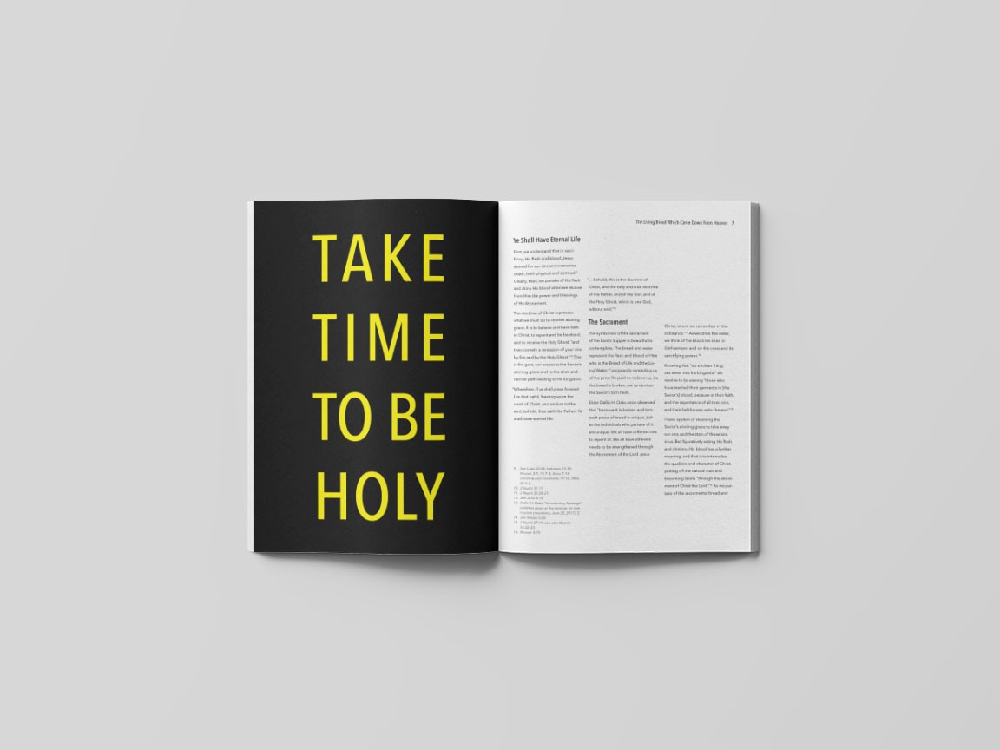
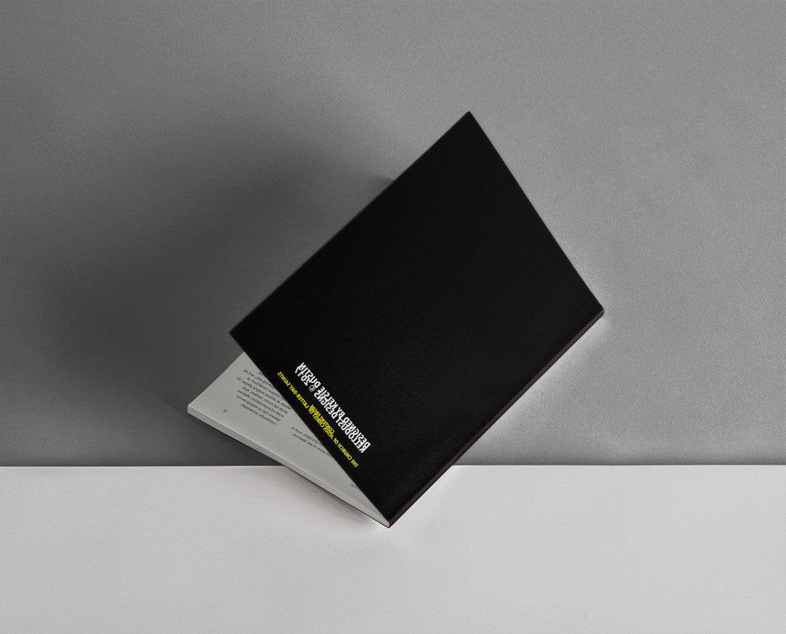

here's some of my stuff.

Binge: The Real Enemy of Productivity Prototype
Binge is a microsite prototype design that publicly enforces the abuse of online video streaming services like Netlix, YouTube, Hulu, and Amazon Prime Video. The site acts as a public service announcement for those who often binge watch on these services. This project was introduced as an information design project. The XD prototype can be found  